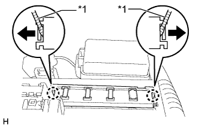
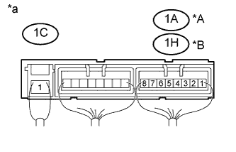

ИНТЕГРИРОВАННОЕ РЕЛЕ > ПРОВЕРКА БЕЗ СНЯТИЯ С АВТОМОБИЛЯ |
| 1. СНИМИТЕ КРЫШКУ БЛОКА РЕЛЕ № 1 |
Снимите крышку блока реле № 1.
| 2. ПРОВЕРЬТЕ ИНТЕГРИРОВАННОЕ РЕЛЕ № 1 |
|  |
С помощью отвертки открепите 2 захвата и отсоедините интегрированное реле № 1 от распределительного блока моторного отсека.
| *1 | Защитная клейкая лента |
|  |
Измерьте сопротивление в соответствии со значениями, приведенными в таблице ниже.
| Контакты для подключения диагностического прибора | Условие | Заданные условия |
| 1A-8 - 1C-1 *A 1H-8 - 1C-1 *B | Напряжение аккумуляторной батареи не подается на контакты 1C-1 и 1A-7 *A Напряжение аккумуляторной батареи не подается на контакты 1C-1 и 1A-7*B | 10 кОм или более |
| 1A-8 - 1C-1 *A 1H-8 - 1C-1 *B | Напряжение аккумуляторной батареи подается на контакты 1C-1 и 1A-7 *A Напряжение аккумуляторной батареи подается на контакты 1C-1 и 1A-7 *B | Менее 1 Ом |
| *A | для моделей с бензиновым двигателем |
| *B | для моделей с дизельным двигателем |
| *a | Устройство с подсоединенным жгутом проводов (интегрированное реле № 1) |
Установите интегрированное реле № 1 в распределительный блок моторного отсека и закрепите 2 захватами.
| 3. УСТАНОВИТЕ КРЫШКУ БЛОКА РЕЛЕ № 1 |
Установите крышку блока реле № 1.